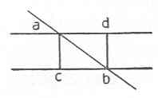

Kant: AA XIV, Mathematik , Seite 034 |
|||||||
Zeile:
|
Text:
|
|
|
||||
| 01 | Man nahm an, daß die perpendikel Linie aus einem Punct a der | ||||||
| 02 | oberen die Weite der ersten von der zweyten, das perpendikel aber aus b | ||||||
| 03 |  |
auf da die Weite der zweyten von der ersten Messen | |||||
| 04 | sollte und, da die Weite als gleich angenommen war, | ||||||
| 05 | diese Linien gleich seyen. In so fern ist dieser Schlus | ||||||
| 06 | auch richtig, obzwar aus durch durch einen paralogism. | ||||||
| 07 | Denn weil ich db so nahe an ac nehmen kan, als ich will, so kan sie auch | ||||||
| 08 | mit ac zusa der Punct b mit c zusammenfallen, wenn nur bd = ca ist. | ||||||
9. χ—ψ. L Bl. A 13. R I 82—3. S. I: |
|||||||
| 09 | Die Entfernung zweyer | ||||||
| 10 | geraden Linien von einander ist die Perpendikellinie, die aus einem | ||||||
| 11 | Puncte der einen auf die andere gefället wird, so fern sie mit derjenigen, | ||||||
| 12 | die aus demselben Puncte auf die erstere (g perpendicular ) errichtet | ||||||
| 13 | (g wird ), mit dieser congruirt. Denn nur diese Linie mißt die Entfernung | ||||||
| 14 | (g der Linien von einander ). Daß aber eine gerade Linie, die von | ||||||
| 15 | der andern eine bestimte Entfernung hat, in allen Puncten von dieser in | ||||||
| 16 | gleicher Entfernung stehe, ist ein identischer Satz; denn das ist nur die | ||||||
| 17 | bestimte Entfernung einer ganzen Linie von der anderen. | ||||||
| [ Seite 033 ] [ Seite 035 ] [ Inhaltsverzeichnis ] |
|||||||
;){kind=link}